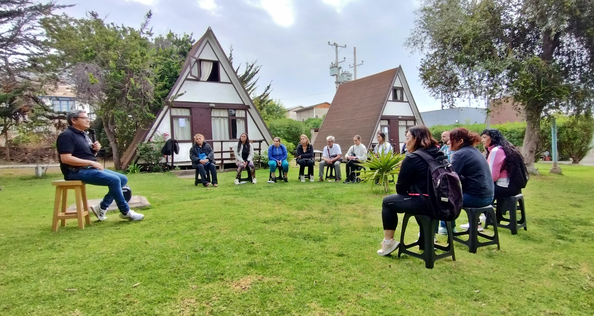
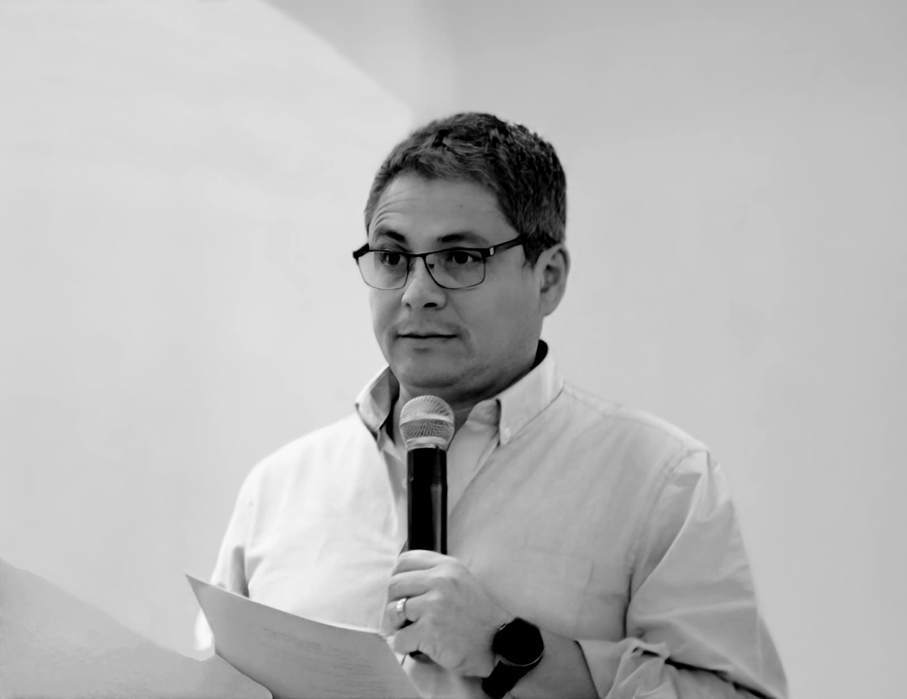

Somos una escuela de liderazgo con más de una década de experiencia en la formación de líderes de calidad humana; y cientos de seminarios dictados, abierta a quien quiera auto descubrirse y desee el éxito en su vida; gestionado tanto en su rol personal como profesional, sin distinciones políticas o religiosas de ningún tipo.
Nos ocupa el crecimiento y mejora continua tanto personal, como profesional y espiritual de nuestros participantes en consonancia con su propio y particular propósito de vida; que constituye el descubrimiento más importante en nuestro espacio de trabajo.
Desde nuestra institución, promovemos y potenciamos el amor propio, la autoestima y el liderazgo, entendiéndolo fundamental para la realización y éxito de proyectos, objetivos y metas; como así también, de las relaciones humanas desde cada uno de los roles que desempeñan nuestros integrantes en las distintas áreas de su vida.
Sebastián Ruiz Martín, Coach Empresario; no sólo es el director; si no también el Facilitador de la Escuela de Liderazgo Primeros Pasos.
Se desempeña en la enseñanza y educación transformacional con la firme misión de formar líderes que transformen sus vidas y aporten valor a la comunidad.
Desde el 2004; cuando el coaching estaba recién comenzando en Argentina; tomó su primer seminario de desarrollo personal y profesional; y es desde ese entonces que no ha dejado de trabajar y formarse en la materia.
Durante más de ocho años se entrenó profesionalmente para desarrollar y brindar poderosas herramientas y crear situaciones vivenciales de expansión, abordando la tarea de “facilitar” con VISIÓN y PROPÓSITO.
Fundó su Escuela el 15 de diciembre de 2012 como un espacio de trabajo, formación y expansión de conciencia para todos aquellos que decidieran alcanzar la realización y protagonismo de sus vidas, basados en el desarrollo tanto personal, como también profesional y espiritual a través de seminarios, talleres y cursos dictados desde entonces.
Con esa acumulación de experiencia, desde el Liderazgo y la Integración Holística; ha desarrollado y perfeccionado diferentes plataformas virtuales y presenciales y, acompañando personalmente el proceso de sus participantes (un gran elemento diferenciador); ha logrado que los egresados de los cursos, talleres y seminarios de Primeros Pasos den fiel testimonio de las poderosa herramientas transformacionales que obtienen del Facilitador; entregadas con altos estándares de Excelencia alcanzando sus metas y objetivos.
